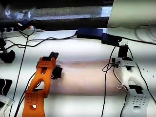
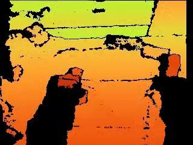
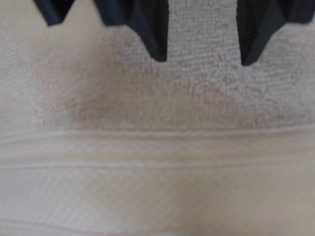
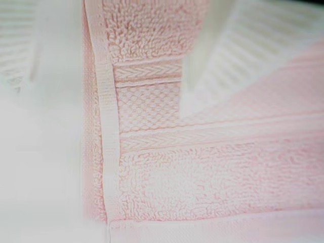

01 · 프로젝트 목표
로봇 두 팔이 펼친 수건을 스스로 반으로 접고, 대문접기까지 마무리합니다
사람의 시연을 보고 따라 하는 AI 모델 하나로, 두 동작을 끊지 않고 이어서 배웁니다


로봇SO-101 양팔
가르치는 방법사람이 직접 조작한 시연
현재 성공률측정 전
수건 접기 정책 학습
1 / 5
02 · 시스템 구성
카메라 4대 영상과 관절 상태가 모델 하나를 거쳐 양팔 동작이 됩니다




함께 입력 양팔 관절 상태 12개 · 30프레임/초
›
ACT 모델
사람의 시연을 따라 하도록 학습한 모델
100스텝(약 3.3초) 분량을 한 번에 예측
100스텝(약 3.3초) 분량을 한 번에 예측
›
양팔 관절
목표값 12개
목표값 12개
예측한 동작을 30번/초로 실행
수건 접기 정책 학습
2 / 5
03 · 데이터와 학습
시연 46개를 97개로 늘려 100,000스텝 학습합니다
원본 시연 (사람이 단계 경계 검수)72개
조건에 맞는 원본 (펼친 상태에서 시작)46개
복제 포함 에피소드97개
프레임159,084개
학습 / 평가79 / 18개
학습 스텝 · 배치100,000 · 8
점검 주기10,000스텝마다
예상 학습 시간약 11~13시간
복제본은 같은 영상입니다. 그래서 학습에 쓰이는 서로 다른 시연은 37개이고, 매번 밝기·색·작은 이동과 회전을 다르게 바꿔 넣어 과적합을 줄입니다.
수건 접기 정책 학습
3 / 5
04 · 예상 리스크
예상되는 위험 세 가지와 대응
1
시작 상태가 한정되어 있다
우려
펼친 수건에서 시작하는 시연만 학습해서, 구겨지거나 비뚤게 놓이면 실패할 수 있습니다.
대응
시험 때는 수건을 먼저 펼쳐 놓고 시작하고, 필요하면 펼치기 시연을 추가합니다.
2
서로 다른 시연이 적다
우려
복제본이 같은 영상이라 실제 학습 시연은 37개뿐입니다.
대응
이미지 변환을 매번 다르게 적용하고, 결과를 보고 시연을 더 모읍니다.
3
오차가 줄어도 성공은 아니다
우려
학습 손실이 낮아도 로봇이 실제로 잘 접는다는 보장은 없습니다.
대응
30회 실제 시험으로 성공률을 재고, 점검에서 성능이 떨어지면 이전 체크포인트를 씁니다.
수건 접기 정책 학습
4 / 5
05 · 평가와 다음 단계
30회 실제 시험으로 확인하고, 실패한 단계에 맞춰 다음을 정합니다
- 1같은 조건에서 로봇으로 30회 시험합니다.
- 2성공 기준은 시험 전에 정합니다.
- 3매번 성공 여부와 실패한 단계(반접기 · 전환 · 대문접기)를 기록합니다.
다음 단계
실패가 전환이나 대문접기에 몰리면 정책을 둘로 나눠 학습합니다. 시연 추가와 가상 환경(MuJoCo) 보강도 함께 검토합니다.
성공률
측정 전 / 30회
| 실패한 단계 | 횟수 |
|---|---|
| 반접기 중 | ― |
| 전환 구간 | ― |
| 대문접기 중 | ― |
수건 접기 정책 학습
5 / 5